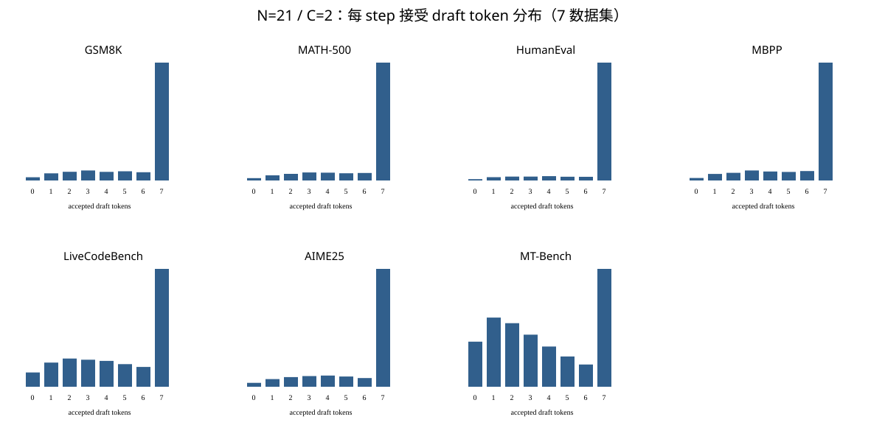

DFlash2 Tree：从建树到 E2E 加速
Qwen3.8-27B · protected-trunk best-first tree · flattened hybrid target · GPU build/verify/commit
摘要
本页清理并取代旧版阶段报告，完整记录 ours tree 从候选构造、单次 flattened target forward、GDN 父状态执行、paged parent-sparse attention、GPU verification 到 grouped cache commit 的最终路径。Tree 使用与 official DFlash2 完全相同的 draft、candidate selector 和 7-token protected trunk，只在 21-node 预算内加入高概率分枝。
最终 4ae600a 在七数据集、每方法750请求的A100 eager正式矩阵中，pooled per-request tau从 6.1797 提高到 6.8752（+11.25%，95% CI [10.67%,11.85%]），合并completion throughput从 59.087 提高到 68.113 tok/s（1.1528×，+15.28%）；7/7数据集同时获得tau和E2E吞吐提升。最新同commit matched profile显示tree target kernels比chain多11.203 ms，其中model forward +9.691 ms、grouped commit +1.435 ms；GPU verify仅0.009 ms。结论限于A100 SM80、TP1、batch/concurrency 1、eager、无CUDA Graph。
1. 问题与可比口径
Official DFlash2 每轮由 drafter 和 selector 产生一条 7-token chain，target 输入为 anchor 加 7 个 proposal，共 8 rows。Ours 保留该完整 chain，再加入分枝，target 输入为 anchor 加 21 个唯一 tree nodes，共 22 rows。算法收益来自同一 target verification 中覆盖更多候选路径；工程目标不是让 22 rows 的算术量消失，而是避免公共前缀重复、Python/CPU 建树、逐叶 KV 复制、逐节点 kernel launch、host verification 和逐层 commit 等额外开销，使每个 verification step 的关键路径接近 8-row chain。
| 框架与精度 | 同一 vLLM fork；PyTorch 2.11+cu129；target BF16，GDN recurrent state FP32；TP1，eager |
|---|---|
| 模型结构 | 64 decoder layers = 48 GDN + 16 full attention；每层均有 dense SwiGLU MLP |
| 正式数据 | GSM8K 顺序前32条；greedy；thinking off；max_tokens=512；concurrency=1；固定seed；1条warmup |
| 吞吐 | 正式 completion tokens / 客户端请求 wall；不含加载与warmup |
| tau | 先按请求计算 1 + accepted_draft_tokens / verification_steps，再对请求等权平均 |
| 独占 | 正式运行前停止已知GPU placeholder，确认无其他compute process；退出trap恢复并核对唯一占位 |
历史受 placeholder 竞争、不同 commit、packed-path 重复计算或 profiler 插桩影响的数字只用于说明演进，不与最终矩阵直接计算 speedup。
2. 建树方法：保护 official trunk 的 best-first expansion
2.1 Selector 输入
DFlash2 draft 同时处理 7 个 proposal slots。每个 slot 保留 top-16 候选，产生 candidate_ids[B,7,16]、unary_logits[B,7,16]、draft hidden [B,7,5120]，官方 candidate selector 再产生 edge_scores[B,7,16,16]。edge_scores[b,t,p,c]表示 slot t 中，从前一 slot rank p 转移到当前 rank c 的分数。
2.2 Protected trunk
2.3 额外分枝
每个候选节点保存 (parent, depth, token, rank, cumulative_log_probability)。Builder 将 root 和 trunk 各前缀的非重复 successor 放入稳定最大堆，按累计 log probability best-first 弹出；只有父节点已物化才允许加入，因此始终 prefix-closed。每个 parent 最多 C 个不同 token child，总 draft-node 预算 N，深度不超过7；同分数用单调 counter 稳定决胜。历史默认是 N=21,C=2，新实验的吞吐候选是 N=35,C=3。先占用7个 trunk nodes，剩余最多14个节点分配给高概率分枝。
2.4 最终 GPU builder
早期版本把 selector tensor 拷到CPU，用Python对象和heap建树，再把parent/depth/mask上传GPU。最终SM80路径由一个CUDA block对应一个请求、一个thread串行执行同一稳定heap算法；串行是有意选择，因为候选仍为7×16、node预算上限64，目标是消除同步与对象开销而非扩大heap内部并行。Kernel直接输出 token、local parent、depth、candidate rank、trunk、含anchor的full parent/depth、ancestor rows和[21,21] mask。100组随机输入与CPU OfficialDFlash2TreeBuilder逐位一致；非SM80或显式关闭时回退CPU。
2.5 符号与真实接口
算法先按单个请求描述；当前GPU入口要求 B=1，因此批维在伪代码中消去。Anchor由model runner作为target row 0单独传入，GPU builder实际接收候选token与selector边分数，不接收anchor token ID。CPU reference额外保存anchor ID，用于构造完整的CandidateTree对象。
| 符号 | 形状 / 类型 | 定义 | 实现对应 |
|---|---|---|---|
| \(D\) | 标量；当前7 | draft slot数，也等于树的最大draft深度。 | candidate_ids.shape[1] |
| \(K\) | 标量；当前16 | 每个slot保留的候选rank数。 | selector_top_k |
| \(X_{d,r}\) | \(X\in\mathbb{N}^{D\times K}\) | 深度\(d\)处rank \(r\)对应的token ID。同一个token可出现在不同parent下。 | candidate_ids[0,d,r] |
| \(E_{d,p,r}\) | \(E\in\mathbb{R}^{D\times K\times K}\) | selector给出的条件边分数：前一slot候选rank为\(p\)时，当前slot选择rank \(r\)的分数。深度0使用约定的前驱rank 0。 | scores[0,d,p,r] |
| \(L_{d,p,r}\) | FP32，形状同\(E\) | 沿最后一维归一化的条件log probability：\(\log\operatorname{softmax}(E_{d,p,:})_r\)。 | log_probabilities |
| \(N\) | 7–64 | draft-node预算；anchor不计入。旧默认21，吞吐候选35。 | max_nodes |
| \(C\) | 2–16 | 每个parent最多保留的不同token child数。旧默认2，吞吐候选3。 | max_branching |
| \(v\) | 整数，\(0\le v<|T|\) | 已物化draft node的局部索引；节点按创建顺序编号，parent始终早于child。 | node_index |
| \(\pi_v\) | 整数或−1 | 节点\(v\)的局部parent索引；−1表示它直接连接虚拟根/anchor。 | parent_indices[v] |
| \(\delta_v,r_v,\ell_v\) | 整数、整数、FP64累加值 | 节点深度、selector rank及从虚拟根到该节点的累计log path probability。 | depth、candidate_rank、log_path_probability |
| \(T\) | 有序node数组 | 正在构造的prefix-closed树；数组顺序同时是target flattened row顺序的基础。 | nodes / CUDA输出数组 |
| \(\tau\) | 长度\(D\)的node索引序列 | 严格复现official selector walk的protected trunk；先创建并始终保留。 | trunk_indices |
| \(U\) | 集合\(\{(\pi,\mathrm{token})\}\) | 已占用的(parent, token ID)键，用于保证同一parent下token唯一。 | unique_child |
| \(c_\pi\) | 非负整数 | parent \(\pi\)当前已物化的child数量。 | children[parent] |
| \(H,z\) | 稳定max-heap、递增整数 | 候选frontier与入队序号；priority相同者按更早的\(z\)先弹出。 | frontier/heap、counter |
| \(s,\alpha\) | 枚举、浮点数 | priority策略与depth-bonus系数；最终推荐继续使用累计path probability。 | strategy、strategy_alpha |
每个node记录六元组 \(T[v]=(x_v,\pi_v,\delta_v,r_v,\ell_v,b_v)\)，其中\(x_v\)是token ID，\(b_v\)表示该节点是否属于protected trunk。候选heap项记录 \((h,-z,\pi,d,r,\ell)\)：\(h\)负责排序，\(\ell\)始终保存真实累计log probability，供child继续扩展。
2.6 算法 1：保护官方路径的稳定 best-first 构树
算法 1 对应当前 exp/tree-budget-branching-sweep@59d51f76 的CPU/GPU共同语义。配置 \(N=35,C=3\) 在正式实验中取得最高吞吐；生产默认配置保持为 \(N=21,C=2\)。
| 1: | \(L_{d,p,r}\gets\operatorname{logsoftmax}(\operatorname{FP32}(E_{d,p,:}))_r\) |
| 2: | \(T\gets[\,];\ U\gets\varnothing;\ \tau\gets[\,];\ c_{-1}\gets0\) |
| 3: | \(\pi\gets-1;\ r_{\mathrm{prev}}\gets0;\ \ell\gets0\) |
| 4: | for \(d=0,\ldots,D-1\) do ▷ protected official trunk |
| 5: | \(r\gets\arg\max_j L_{d,r_{\mathrm{prev}},j}\) |
| 6: | \(\ell\gets\ell+L_{d,r_{\mathrm{prev}},r}\) |
| 7: | \(v\gets\operatorname{Append}(T,(X_{d,r},\pi,d,r,\ell,\mathrm{true}))\) |
| 8: | \(c_v\gets0;\ c_\pi\gets c_\pi+1;\ U\gets U\cup\{(\pi,X_{d,r})\};\ \tau.\operatorname{append}(v)\) |
| 9: | \(\pi\gets v;\ r_{\mathrm{prev}}\gets r\) |
| 10: | end for |
| 11: | \(H\gets\varnothing;\ z\gets0\) ▷ stable max-heap and insertion serial |
| 12: | procedure \(\operatorname{Enqueue}(\pi,d)\) |
| 13: | if \(d\ge D\) then return |
| 14: | \((r_0,b)\gets(0,0)\) if \(\pi=-1\), otherwise \((r_\pi,\ell_\pi)\) |
| 15: | for \(r=0,\ldots,K-1\) do |
| 16: | if \((\pi,X_{d,r})\in U\) then continue |
| 17: | \(\ell'\gets b+L_{d,r_0,r};\ h\gets\operatorname{Priority}(\ell',d,s,\alpha)\) |
| 18: | \(H.\operatorname{push}(h,-z,\pi,d,r,\ell');\ z\gets z+1\) |
| 19: | end for |
| 20: | end procedure |
| 21: | \(\operatorname{Enqueue}(-1,0)\); then \(\operatorname{Enqueue}(v,\delta_v+1)\) for each \(v\in\tau\) |
| 22: | while \(H\ne\varnothing\land|T|<N\) do |
| 23: | \((\_,\_,\pi,d,r,\ell')\gets H.\operatorname{popmax}()\) |
| 24: | if \(c_\pi\ge C\lor(\pi,X_{d,r})\in U\) then continue |
| 25: | \(v\gets\operatorname{Append}(T,(X_{d,r},\pi,d,r,\ell',\mathrm{false}))\) |
| 26: | \(c_v\gets0;\ c_\pi\gets c_\pi+1;\ U\gets U\cup\{(\pi,X_{d,r})\}\) |
| 27: | \(\operatorname{Enqueue}(v,d+1)\) |
| 28: | end while |
| 29: | \(\mathcal{D}\gets\operatorname{MaterializeMetadata}(T)\) ▷ definitions in Table 2 |
| 30: | return \((T,\tau,\mathcal{D})\) |
| 31: | function \(\operatorname{Priority}(\ell,d,s,\alpha)\) |
| 32: | if \(s=\mathrm{PathProbability}\) then return \(\ell\) |
| 33: | if \(s=\mathrm{AverageLogProbability}\) then return \(\ell/(d+1)\) |
| 34: | if \(s=\mathrm{DepthBonus}\) then return \(\ell+\alpha(d+1)\) |
| 35: | end function |
Ordering. Heap \(H\) sorts by descending priority and ascending insertion serial \(z\). Set \(U\) uses the key (parent index, token ID), which guarantees sibling-token uniqueness. Priority allocates the node budget; target predictions determine acceptance.
2.7 输出metadata如何由树生成
| 输出 | 形状 | 定义与消费者 |
|---|---|---|
| \(\mathbf{x}[v]\) | \([M]\) | \(x_v\)，flattened target的draft token；target row为\(v+1\)。 |
| \(\boldsymbol{\pi}[v]\) | \([M]\) | \(\pi_v\)，draft-node局部parent；root child为−1。 |
| \(\boldsymbol{\delta}[v]\) | \([M]\) | \(\delta_v\)，0-based draft depth。 |
| \(\mathbf{r}[v]\) | \([M]\) | \(r_v\)，该node来自selector top-K中的rank。 |
| \(\mathbf{q}[v]\) | \([M]\) | \(\delta_v+1\)，相对anchor的position offset。 |
| \(\boldsymbol{\pi}^{+}[0]\) | \([M+1]\) | −1；row 0代表anchor。 |
| \(\boldsymbol{\pi}^{+}[v+1]\) | 若\(\pi_v=-1\)则为0，否则为\(\pi_v+1\)。GDN与GPU verify据此读取含anchor的parent row。 | |
| \(\boldsymbol{\delta}^{+}[0]\) | \([M+1]\) | 0；anchor depth。 |
| \(\boldsymbol{\delta}^{+}[v+1]\) | \(\delta_v+1\)。 | |
| \(\mathbf{A}[v+1,:]\) | \([M+1,D]\) | \([0,\operatorname{ancestors}(v)\text{ in root-to-leaf order},-1\text{ padding}]\)；供GDN与parent-sparse attention复用。 |
| \(\mathbf{M}[v,u]\) | \([M,M]\), bool | 当且仅当\(u=v\)或\(u\)是\(v\)的draft ancestor时为true；历史KV由paged cache单独提供。 |
在35/3配置中，trunk占7个节点，heap分配其余28个节点，target一次处理anchor加35个tree rows，共36 rows。节点创建顺序满足\(\pi_v<v\)，因此parent state在child执行前已经可用。当前验收配置的frontier足以填满预算，故GPU固定形状路径取\(M=N\)。
2.8 维度、索引约定与算法边界
当 N=35,C=3 时，前7个draft nodes先占用trunk，至多28个剩余节点由heap扩展；target输入为anchor + 35 nodes = 36 rows，而21/2旧默认是22 rows。parent[v]是draft-node局部索引，root的直接子节点为−1；full_parent[v+1]是含anchor的target row索引，root子节点映射到row 0。mask只表达本轮tree nodes间的自身/祖先关系；历史cache由attention kernel另外读取。ancestors含anchor且用−1补齐，供GDN与paged parent-sparse attention复用。
逻辑上 M≤N；当前经过验收的GPU定形kernel预分配且按预算输出 M=N，适用于本报告的budget/branching组合，不支持把“队列提前耗尽”静默当作短树。max_branching=1不用于大budget配置：该树最大仅能容纳7-node trunk，应使用official chain。temperature=1、min_path_probability=0是本轮GPU与CPU逐位校验的实验口径；上面的伪代码省略了未在GPU热路径使用的概率阈值。单请求SM80实现中，anchor_id用于标记树根/构造reference，不进入额外节点的selector打分。
3. 一次 tree speculative step 的完整数据流
本节沿用先前正式验收的21/2配置，故示意形状为anchor+21=22 rows；新推荐35/3使用anchor+35=36 rows，同一层内算子依照N动态改变行数，构树算法及两种配置的输出元数据见2.5–2.6节。
3.1 Target公共骨架
每层输入为X[N,5120]，chain的N=8，tree的N=22。64层按[GDN,GDN,GDN,FullAttention]×16排列；每层随后执行dense SwiGLU：[N,5120]×[5120,34816]→[N,34816]，SiLU×up得到[N,17408]，再投影回[N,5120]。因此MLP与投影的22-row真实算量是算法覆盖更多节点的必要成本，不归类为工程冗余。
3.2 GDN层（48层）
输入投影生成q/k [22,16,128]、v/z [22,48,128]、a/b [22,48]；depthwise causal conv宽4。每个节点沿parent读取自己的3-token rolling window。Recurrent state为每value head一个[128,128] FP32矩阵，总形状[48,128,128]；更新式为：
最终persistent/tiled kernel按拓扑遍历，siblings并行，保留每个节点状态供verification后选择性commit。显式PTX数学路径与参考实现在211,200个g/beta值上精确一致，并移除SM80校正kernel。
3.3 Full attention层（16层）
QKV投影逻辑输出q/gate [22,24,256]与k,v [22,4,256]。最终paged parent-sparse v2 kernel直接读取4-head paged history KV，以parent/ancestor关系限制每个query只访问已确认历史和自身祖先，GQA的6个query heads复用同一KV head；不再按leaf复制history或构造通用dense mask。输出[22,24,256]经sigmoid gate和O projection返回[22,5120]。
3.4 LM head
最终hidden [22,5120]乘词表权重[248320,5120]得到logits [22,248320]并argmax。相比chain的8 rows，这仍是必要的node计算量，也是profile中不能靠消除launch完全抹掉的部分。
4. 关键 CUDA 工程实现
| 阶段 | 早期问题 | 最终路径 |
|---|---|---|
| Tree topology | GPU→CPU selector同步、Python heap、metadata H2D | 固定规模GPU serial heap，一次输出全部device topology |
| GDN conv/prep | root-to-leaf公共前缀重复；额外中间tensor/launch | all-node parent gather；exact fused conv-prep；topology每step缓存并48层复用 |
| GDN recurrent | 每depth/节点launch与global parent-state访问 | persistent/tiled CUDA；每层一个recurrent launch；GQA-like head tile |
| Full attention | 逐leaf复制history与varlen packing | paged parent-sparse v2，直接读paged KV；GQA KV复用与split-KV专门路径 |
| Verify | predictions D2H，CPU遍历leaf paths | GPU child lookup；固定8-row workspace；accepted count留在device |
| Commit | 48层逐层index/select/copy与host accepted count | 一个grouped GDN/conv commit + 一个grouped attention commit，device count动态mask |
| Diagnostics | 每step D2H、mkdir/open/JSON write | 默认每请求仅首step summary；正式request acceptance trace仍完整 |
最终tree不是把chain kernel简单复制21次，也不是逐leaf执行target。它以22行小矩阵GEMM保留节点并行，以parent topology承担依赖，以专用attention/GDN kernel避免路径复制；verification与commit也不再把动态接受长度拉回host。CUDA Graph在本阶段明确未适配。
5. GPU verification、采样与cache提交
Builder保证同一parent下token唯一，因此从anchor prediction出发，每层查找匹配token child会得到唯一greedy路径。GPU verify最多走7层，输出固定容量selected_rows[8]、sampled_token_ids[8]、device scalar num_sampled/num_rejected以及诊断decision。200组随机树覆盖local/full parent布局、accepted 0…7和非默认stream，均与CPU leaf遍历严格一致。
随后两个grouped kernels提交状态：16个full-attention层写入选中rows的4-head K/V；48个GDN层写入FP32 SSM state与最后接受位置的conv rolling window。Dynamic commit读取device accepted count并mask固定8-row workspace，非trace step没有decision D2H。以tau=7.120866计，48层selected SSM读写约2.150 GB/step；1.434 ms对应约1.50 TB/s，已接近A100 HBM带宽上界，所以后续纯layout微调空间有限。
6. 从正确性reference到最终默认路径
| 阶段 | GSM8K-32 tok/s | 关键变化 | 状态 |
|---|---|---|---|
| 初始unique-node CUDA DAG | 47.858 | 替代packed-path公共前缀重复，仍有ragged packing和大量launch | 历史起点 |
| Vectorized attention plan | 52.559 | 每step构建一次索引，16层复用 | 采用 |
| GDN冗余清理 | 60.515 | 删除无用snapshot/clone，48层共享topology | 采用 |
| Paged parent-sparse v2 | 约63.6–64.1 | 直接读取paged history，替代逐leaf物化 | 采用 |
| Persistent/tiled GDN + grouped commit | 约67.6 | recurrent每层一个launch；commit合并 | 采用 |
| Metadata reuse / exact gating | 70.2–72.4 | 索引每step复用；去掉SM80 correction launch | 采用 |
| GPU verify | 73.48 | 移除CPU leaf verify与大部分同步 | 采用 |
| Device count / dynamic commit | 75.237 | 非trace step不再D2H accepted decision | 采用 |
| GPU builder/topology | 78.208 / 80.735 | 消除CPU heap和GPU↔CPU↔GPU metadata路径 | 采用；两轮文本一致 |
| 最终zero-env默认tree | 80.180 | SM80默认GPU build+verify；summary trace | 当前推荐 |
7. 当前commit的matched kernel profile
本表重新测量最终生产实现 exp/noncompute-p0-p4@4ae600a，不再沿用P0–P2之前的旧profile。profile分支 8d21bff 只添加scope，不改变kernel选择和算术。对同一GSM8K请求的step 10/11/12，在history 156/164/172、protected trunk逐token一致、chain 8 rows/tree 22 rows下，先保存cache/state，测chain，恢复完全相同状态，再测tree；GPU builder、GPU verify和paged_parent_v2均开启。表内为三步平均CUDA kernel时间；六份trace均完成launch correlation，unmapped=0。
| scope | Chain ms | Tree ms | 增量 | kernels chain/tree |
|---|---|---|---|---|
| target step | 45.077 | 56.279 | +11.203 | 3233 / 3498 |
| target model forward | 43.489 | 53.180 | +9.691 | 3231 / 3483 |
| 48×GDN attention | 12.113 | 15.504 | +3.392 | 768 / 924 |
| GDN input projection | 6.129 | 6.378 | +0.249 | 192 / 144 |
| GDN recurrent | 1.593 | 3.423 | +1.830 | 48 / 48 |
| GDN output projection | 3.084 | 3.413 | +0.329 | 144 / 192 |
| 16×full attention | 4.198 | 7.002 | +2.804 | 528 / 624 |
| 64×MLP | 21.404 | 23.870 | +2.466 | 256 / 256 |
| logits/argmax | 1.588 | 1.592 | +0.004 | 2 / 2 |
| GPU tree verify | — | 0.009 | +0.009 | 0 / 1 |
| grouped state commit | — | 1.435 | +1.435 | 0 / 2 |
最大必要计算增量仍是GDN、parent-sparse full attention和22-row MLP；GPU verify已经可以忽略。Commit约搬运2.15 GB/step，1.435 ms约等于1.50 TB/s，接近A100 HBM带宽下界。Tree只比chain多265个kernel，数量本身已不是首要瓶颈。
这是target-only matched profile，不包含draft、GPU builder、scheduler、HTTP和逐step request trace；profiler也改变CPU wall，因此不能拿56.279 ms直接替代E2E verification-step wall。原始scope汇总与三步metadata见最新实验记录。
8. 七数据集正式E2E与GSM8K-32对齐
8.1 七数据集正式结果
最终代码在lengjingwen108-0的两张A100上同时运行chain GPU0和tree GPU1；每个服务内部concurrency=1、eager、greedy、thinking off、max_tokens=2048。GSM8K、MATH-500、HumanEval、MBPP、LiveCodeBench各取顺序前128条；AIME25全量30条，MT-Bench first turn全量80条。每方法共750请求。
| 数据集 | n | Chain tau | Tree tau | tau收益 | Chain tok/s | Tree tok/s | 加速 |
|---|---|---|---|---|---|---|---|
| GSM8K | 128 | 6.2797 | 7.0582 | +12.40% | 64.483 | 74.371 | 1.1533× |
| MATH-500 | 128 | 6.3136 | 7.1343 | +13.00% | 67.500 | 77.182 | 1.1434× |
| HumanEval | 128 | 7.3117 | 7.5985 | +3.92% | 70.722 | 77.327 | 1.0934× |
| MBPP | 128 | 6.4855 | 7.1698 | +10.55% | 62.298 | 71.132 | 1.1418× |
| LiveCodeBench | 128 | 5.5918 | 6.4010 | +14.47% | 51.612 | 60.233 | 1.1670× |
| AIME25 | 30 | 5.8132 | 6.7862 | +16.74% | 64.203 | 73.002 | 1.1370× |
| MT-Bench first turn | 80 | 4.5830 | 5.3310 | +16.32% | 43.220 | 51.953 | 1.2021× |
| Macro tau | 7 datasets | 6.0541 | 6.7827 | +12.04% | — | — | — |
| Pooled | 750 | 6.1797 | 6.8752 | +11.25% | 59.087 | 68.113 | 1.1528× |
pooled tau按750个请求等权，paired bootstrap 10,000次的相对收益95% CI为[10.67%,11.85%]。Pooled throughput使用七个数据集各方法completion tokens总和除以各方法wall总和。Tree在7/7数据集上同时提高mean tau和E2E吞吐，说明接受长度收益已跨数学、代码和通用对话任务转化为服务加速。
两方法实际生成token数略有不同；吞吐按各自tokens/wall计算。由于8-row chain和22-row tree改变BF16 GEMM归约形状及后续低margin greedy轨迹，750对中383对文本逐字一致；AIME25为0/30逐字一致。本实验测性能而未执行代码、boxed-answer或judge质量评测，因此不能把文本不一致等同于质量下降，也不能声称严格逐token lossless。
8.2 独立GSM8K-32单步对齐
| 方法 | tokens / steps | mean tau | ms/step | tok/s |
|---|---|---|---|---|
| Ours tree | 12639 / 1781 | 7.120866 | 88.508 | 80.180 |
| Official chain run 1 | 12654 / 2012 | 6.349071 | 89.085 | 70.598 |
| Official chain run 2 | 12654 / 2012 | 6.349071 | 89.657 | 70.148 |
相对chain两轮均值，tree单step latency在1%内，吞吐为1.13936×（+13.94%）。七数据集结果比该32条确认更具代表性，但仍未做GPU交换复测。
9. 正确性、回退和被拒绝方案
- GPU builder：随机100树与CPU official builder的token/parent/depth/trunk/mask逐位一致。
- GPU verify：随机200树、accepted 0…7、两种parent布局和非默认stream与CPU严格一致。
- Dynamic commit：count 1…8下GDN、conv和attention cache逐位一致。
- 最终tree三轮生成轨迹稳定；chain两轮文本32/32一致。Tree与chain文本24/32一致，差异来自不同block boundary/浮点轨迹，不代表speculative输出错误。
- Attention caller-owned workspace在多种history长度逐位一致，但service smoke慢2.7%，已revert。
- 通用SDPA arbitrary mask、topological serial recurrent、compact BMM、direct strided root、scalar direct commit、12/16-node预算均无E2E收益或改变数值轨迹，未设为默认。
- 一次P0 formal在服务运行中修改worktree，造成旧/新Python签名混合和HTTP500；已明确判无效，不进入任何汇总。
- 早期GPU builder曾有parent类型编译错误和遗漏trunk child计数；修复后才通过100随机树与service验收。
10.0 DFlash2 runtime block-size sweep
同一 Qwen3.8-27B-DFlash2 权重、A100、TP1、eager、greedy、concurrency=1、七数据集750请求子集下，比较 chain 模式的运行时 block size。权重配置文件训练/发布口径为 block size 8；这里的 16/24/32 是 vLLM runtime override，不是重新训练的 drafter。
| 运行 block size | num speculative tokens | pooled tok/s | macro tau | pooled request tau | 相对 block8 吞吐 |
|---|---|---|---|---|---|
| 8（历史 baseline） | 7 | 59.087 | 6.054 | 6.180 | — |
| 16 | 15 | 74.799 | 8.487 | 8.768 | +26.59% |
| 24 | 23 | 74.518 | 8.737 | 9.048 | +26.12% |
| 32 | 31 | 73.799 | 8.737 | 9.047 | +24.89% |
| 48 | 47 | 75.961 | 8.742 | 9.048 | +28.56% |
10.0.1 七数据集明细
每个数据集均使用相同请求子集、单并发和关闭 tree 的 chain 配置；tau 为请求级平均接受长度口径，吞吐为正式请求 wall time 计算。
| 数据集 | 请求数 | b8 tau | b16 tau | b24 tau | b32 tau | b48 tau | b8 tok/s | b16 tok/s | b24 tok/s | b32 tok/s | b48 tok/s |
|---|---|---|---|---|---|---|---|---|---|---|---|
| GSM8K | 128 | 6.280 | 8.581 | 8.875 | 8.879 | 8.882 | 64.48 | 85.43 | 87.65 | 86.79 | 88.97 |
| MATH-500 | 128 | 6.314 | 8.657 | 8.900 | 8.900 | 8.894 | 67.50 | 92.21 | 93.20 | 92.91 | 95.21 |
| HumanEval | 128 | 7.312 | 12.098 | 12.826 | 12.819 | 12.853 | 70.72 | 102.79 | 105.93 | 105.50 | 108.32 |
| MBPP | 128 | 6.486 | 9.303 | 9.556 | 9.556 | 9.529 | 62.30 | 82.32 | 83.10 | 80.98 | 84.43 |
| LiveCodeBench | 128 | 5.592 | 7.374 | 7.436 | 7.436 | 7.436 | 51.61 | 61.50 | 60.19 | 59.48 | 60.66 |
| AIME25 | 30 | 5.813 | 7.704 | 7.831 | 7.831 | 7.869 | 64.20 | 83.83 | 82.60 | 82.60 | 85.19 |
| MT-Bench | 80 | 4.583 | 5.690 | 5.735 | 5.735 | 5.728 | 43.22 | 47.98 | 47.01 | 46.49 | 48.31 |
block 16 在该矩阵上吞吐最高；block 24/32 tau 略高但吞吐不再增加，block 32 与 block 24 的 tau 已基本平台。block48 已完成 750 条，吞吐 75.961 tok/s、macro tau 8.742、pooled request tau 9.048；block64 仍在运行，尚未计入最终结论。完整原始记录见 block24/32 实验目录 和 block16 实验目录。
10.1 block size=16 tree 参数 screening 状态
在相同 Qwen3.8-27B-DFlash2 权重上，尝试将 block size=16（15 draft tokens）与历史 tree 构造点 N=21/C=2、28/3、35/3、42/4 组合。该 screening 目标矩阵为七数据集、每点222请求，保持单请求、eager、greedy和相同数据子集。
当前没有有效的 tau/吞吐结果。最小点 N=21/C=2 在首个正式请求的 tree GDN recurrent state 路径即触发 A100 80GB CUDA OOM。已尝试 GPU builder/verify 和 packed GDN、max_model_len=1024、max_num_batched_tokens=512、request max_tokens=256、GPU utilization=0.99，仍需额外约66 MiB（可用约14 MiB）。因此不能把 block size=8 下的35/3或42/4结论外推为 block size=16 的最优配置。所有失败运行均由独占脚本清理并恢复占位程序；原始审计见 实验目录。
10. Tree预算、分枝与priority策略探索
最终GPU builder已从原来的最多32 nodes扩展到64 nodes，并把node budget、每parent最大branching和priority独立参数化。240组随机输入覆盖budget 21/28/35/42/56/64、branching 2/3/4/8/16及累计path probability、平均log probability、depth bonus三类priority；GPU输出的token、parent、depth、protected trunk和ancestor mask均与CPU reference逐位一致。
10.1 30点GSM8K-32 screening
| 配置 | tok/s | mean tau | ms/step | 相对21/2吞吐 |
|---|---|---|---|---|
| 21 nodes / branching2（旧默认） | 78.022 | 7.1209 | 90.956 | — |
| 21 / 3 path probability | 79.276 | 7.2290 | 90.885 | +1.61% |
| 28 / 3 path probability | 79.651 | 7.3193 | 91.761 | +2.09% |
| 35 / 3 path probability | 80.045 | 7.3465 | 91.536 | +2.59% |
| 42 / 4 path probability | 79.993 | 7.4296 | 92.626 | +2.53% |
| 21 / 2 average logP | 76.756 | 7.0608 | 91.531 | −1.62% |
| 28 / 3 depth bonus 0.25 | 79.565 | 7.2815 | 91.332 | +1.98% |
完整30点表显示：budget扩大必须配合更高branching；固定branching2时35→42不再提高tau。35/3是吞吐甜点，42/4提供最高tau但step成本更高。平均logP系统性更差；简单depth bonus未超过原始累计path probability。因此主要收益来自预算与树宽度联合配置，不是更复杂的score。
10.2 七数据集follow-up
对21/2、35/3和42/4各运行GSM8K、MATH-500、HumanEval、MBPP、LiveCodeBench、MT-Bench各32条及AIME25 30条，共222请求/点。
| 配置 | macro tau | pooled tok/s | pooled ms/step | tau变化 | 吞吐变化 |
|---|---|---|---|---|---|
| 21/2 baseline | 6.6616 | 67.892 | 91.687 | — | — |
| 35/3 | 6.8836 | 69.977 | 92.757 | +3.34% 95% CI [2.76%,3.92%] | +3.07% |
| 42/4 | 6.9452 | 69.429 | 94.482 | +4.26% 95% CI [3.68%,4.86%] | +2.26% |
35/3在222请求follow-up中6/7数据集提高吞吐，是完整规模复测候选；42/4在LiveCodeBench因step成本上升而低于21/2，说明最大tau不等于最大E2E。
10.3 35/3完整750请求复测
2026-09-21在lengjingwen108-0单张A100上按表7相同的七数据集规模、greedy、thinking off、max_tokens=2048和concurrency 1，完成35/3累计path-probability配置的750请求。相对表7历史21/2 tree，macro tau从6.7827提高到6.9835（+2.96%），但pooled throughput仅从68.113提高到68.258 tok/s（+0.21%）。即完整规模确认了tau增益，但短矩阵的+3.07%吞吐增益没有等比例复现。
| 数据集 | 35/3 tau | tau变化 | 35/3 tok/s | 吞吐变化 |
|---|---|---|---|---|
| GSM8K | 7.2918 | +3.31% | 76.687 | +3.11% |
| MATH-500 | 7.3256 | +2.68% | 76.088 | −1.42% |
| HumanEval | 7.6618 | +0.83% | 77.887 | +0.72% |
| MBPP | 7.3693 | +2.78% | 74.163 | +4.26% |
| LiveCodeBench | 6.6458 | +3.82% | 59.656 | −0.96% |
| AIME25 | 7.0214 | +3.47% | 69.844 | −4.32% |
| MT-Bench | 5.5690 | +4.46% | 54.111 | +4.15% |
| 汇总 | 6.9835 macro | +2.96% | 68.258 pooled | +0.21% |
这是不同日期、单卡串行35/3与历史双服务并行21/2之间的cross-run比较，并非同run配对或GPU交换实验；实际生成token也略有不同。因此+0.21%不足以声称稳定吞吐提升。当前证据支持35/3稳定提高tau，但其E2E吞吐相对21/2基本持平；下一步应做同卡交错复测或动态budget。
10.4 N=21/C=2 每step接受token分布
在与历史750请求矩阵相同的七数据集上重新收集21-node、branching=2的scheduler trace，共750请求、71,263个正式speculative steps。每step统计accepted_draft_tokens（0–7，不含bonus token）。
| 数据集 | steps | mean | accept=0 | accept=7 |
|---|---|---|---|---|
| GSM8K | 8,425 | 5.834 | 1.89% | 68.11% |
| MATH-500 | 18,145 | 6.029 | 1.43% | 72.52% |
| HumanEval | 4,633 | 6.378 | 0.95% | 82.97% |
| MBPP | 3,543 | 5.899 | 1.47% | 68.67% |
| LiveCodeBench | 16,692 | 4.725 | 5.10% | 42.13% |
| AIME25 | 8,623 | 5.738 | 2.17% | 65.52% |
| MT-Bench | 11,202 | 3.685 | 10.24% | 26.75% |

HumanEval最集中地完整接受7个draft token；MT-Bench最分散，0–3 token占52.19%，与其较低tau一致。LiveCodeBench也明显比数学/代码数据集更分散。每数据集PNG直方图、CSV和JSON见实验目录。
11. 适用边界
当前默认只在SM80自动开启GPU build/verify；其他架构回退CPU。实现限制为单请求、TP1、文本greedy、V2 runner；未覆盖batch>1、continuous batching、PP/PCP、structured output、logprobs、multimodal与CUDA Graph。
七数据集正式矩阵固定chain在GPU0、tree在GPU1并同时运行，尚未交换GPU复测；两卡同为A100 80GB且无其他compute进程，但严格消除卡差仍需cross-over run。当前逐step request trace还包含同步文件open/write，chain和tree都承担同一诊断税；绝对吞吐不能直接与开启CUDA Graph、不同sampling/thinking协议的历史75.10 tok/s结果比较。
11a. speculative cache 复用：GSM8K 128 条单次吞吐诊断
2026-09-23 在单张 A100 80GB PCIe 上，以同一 vLLM commit、Qwen3.8-27B / DFlash2 权重和 tree N=21/C=2、block16，对照旧 full-state tree 与新 speculative cache 复用路径。GSM8K 前 128 条、thinking off、greedy、每条最多 256 tokens、并发 1；两条路径的文本、reasoning、completion token 数与停止原因 128/128 完全一致，均生成 32,169 tokens。
| 路径 | 请求 wall time | 输出吞吐 | 平均 tau（HTTP 计数器） |
|---|---|---|---|
| full-state tree | 466.503 s | 68.958 tok/s | 9.2298 |
| cache-reuse tree | 470.913 s | 68.312 tok/s | 9.2298 |
cache/full 吞吐比为 0.9906（本次低 0.94%）。这是一个数据集、每点一次、固定先后顺序的诊断，不足以声称稳定回退或与历史不同 commit/上下文配置的吞吐结果计算 speedup。服务配置为 max-model-len=1024、gpu-memory-utilization=.92、eager；需要反序/交错复测才可判断小幅差异是否稳定。完整配置、脚本、原始数据位置与结果。
11b. 当前 tree node 显存预算（粗略上限）
基于当前 Qwen3.8-27B、单张 A100 80GB、gpu-memory-utilization=0.90 的服务日志和代码 tensor shape，不能把理论容量当成可安全配置上限。启动时实测分解为：模型权重 54.87 GiB、profiling peak activation 0.43 GiB、non-Torch/CUDA 0.11 GiB、KV/cache reservation 15.92 GiB，合计 71.33 GiB；A100 报告容量约 79.25 GiB，启动预算余量约 7.92 GiB。正式请求期间 nvidia-smi 约 73.30 GiB，瞬时余量约 5.95 GiB。
| 项目 | shape / 计算 | 显存 |
|---|---|---|
| 一个 node 的 GDN recurrent state | 48 layers × 48 × 128 × 128 × FP32 | 144 MiB |
| 一个 node 的 tree convolution state | 48 × 10,240 × 3 × BF16 | 2.8125 MiB |
| full-state tree 一个 node | recurrent + convolution | 146.8125 MiB |
| cache-reuse 一个完整 speculative slot（block16） | 144 MiB recurrent + 16.875 MiB conv cache | 160.875 MiB |
tree 实际状态行数为 R=N+1（包含 anchor）。因此 full-state retained tree state 约为 N=21：3.15 GiB；N=35：5.16 GiB；N=42：6.17 GiB。cache reuse 不再额外创建 [R,48,128,128] tensor，而是占用 speculative cache slots；因此它消除重复 tensor，不是零显存。
| 口径 | 估计 | 解释 |
|---|---|---|
| 把启动预算余量全部用于完整 slot | 约 50 slots | 7.92 GiB ÷ 160.875 MiB；理论上限，不安全 |
| 按请求期间实测余量 | 约 37–38 slots | 5.95 GiB ÷ 160.875 MiB；仍未扣 transient/workspace |
| 考虑 activation/workspace/碎片后的安全估计 | 约 24–32 个新增 node | 工程估计，必须通过 profile 验证 |
模型、KV/cache、activation 和 workspace 的总量已有实测，但当前日志还没有把 15.92 GiB cache reservation 拆成 attention KV、Mamba recurrent、conv cache 和 page 对齐，也没有把请求期间新增约 1.96 GiB 逐项拆平。因此 24–32 是保守工程估计，不是正式容量承诺。当前代码的 tree 配置上限仍是 N=21（实际 R=22）；N=35/42 进入显存风险区。完整计算和限制见 显存/吞吐实验记录。